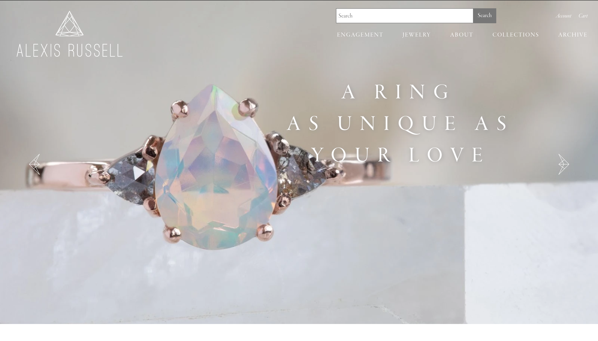
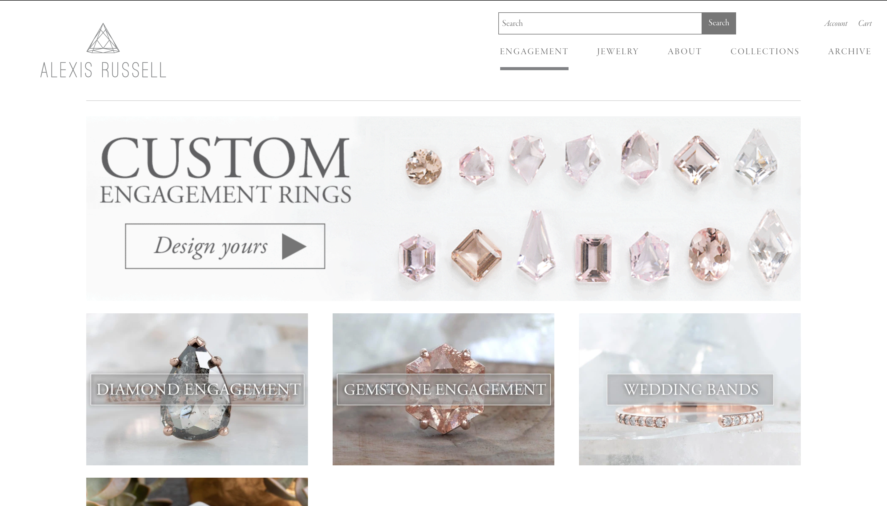
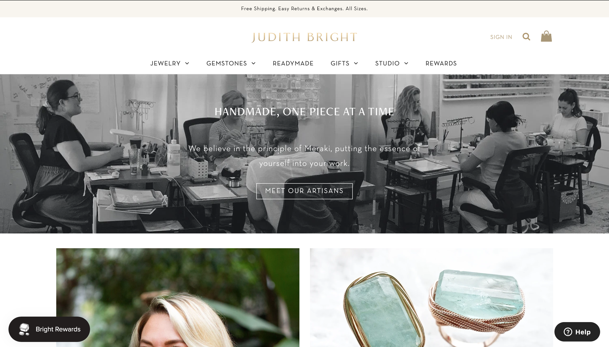
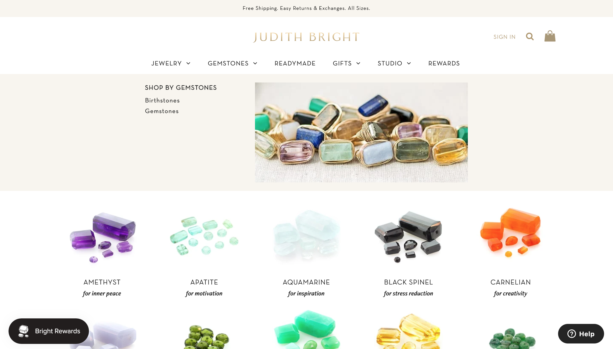
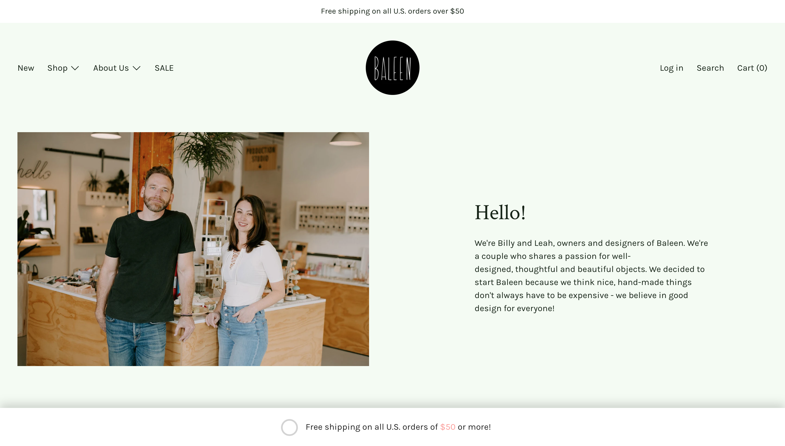
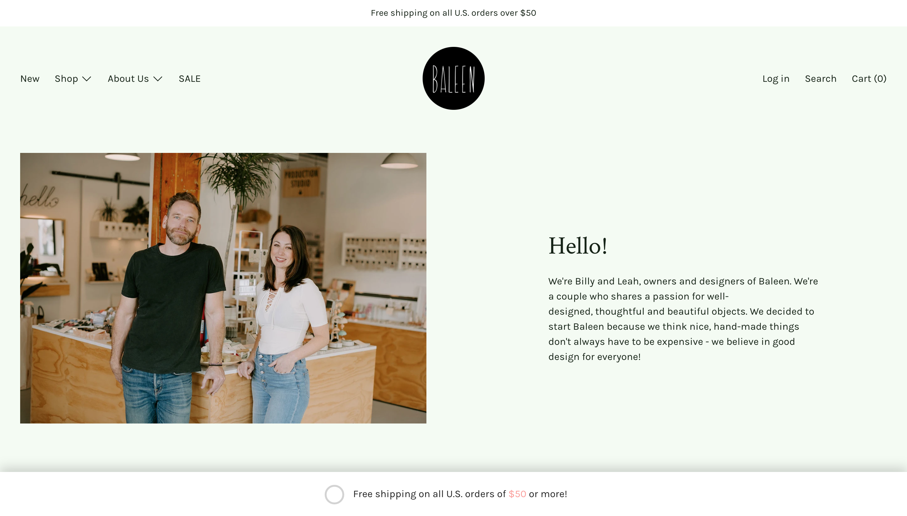

Final project proposal
Introduction
Sam Paige Design
This small business is a jewelry shop that offers hand crafted jewelery for every occasion. Each piece is made at a single storefront in Seattle, Washington by Sam Paige herself. She makes almost all types of jewelry, including but not limited to, engagement rings, earrings and bracelets.
Target audience
The people who will use this site are those who are looking for jewelery for special events, such as, engagemements, weddings, birthday presents, anniversaries and more. It will be more female than males using the site. Most people will be 30 years old or older with stable incomes.
The customer's primary goals will revolve around being able to quickly and easily navigate the website and find a design that fits their moment perfectly. The goal is to find the perfect piece of jewelry for that special someone they are shopping for.
Comparative analysis
Alexis Russel
 Judith Bright
 Baleen
 

Website content
Home
The home page will have an assortment of images of jewelry made by Sam Paige. There will be a pull quote that represents the mission statement for the business.
An elegant ring with a beautiful gemstone.
Jewelry
The jewelry page will be an assortment of images of the different jewlery that can be made/bought or used as inspiration for new custom designs.
A close up shot of a necklace hanging on a rack in a softbox.
About
The About page will tell Sam's story, her mission, why she got into making jewelry, how to contact her and where she is located. There will be an image of her to build trust between her and customers and also a video of her making jewelry that shows the process she goes through for ecah individual piece.
Headshot image of Sam Paige.
Collections
The Collections page will be a gallery of different images placing the jewelry into their respective categories. Customers can click on the specific collection of jewelry they are shopping for to browse previous designs.
Jewlery presented neatly on a plain backdrop.